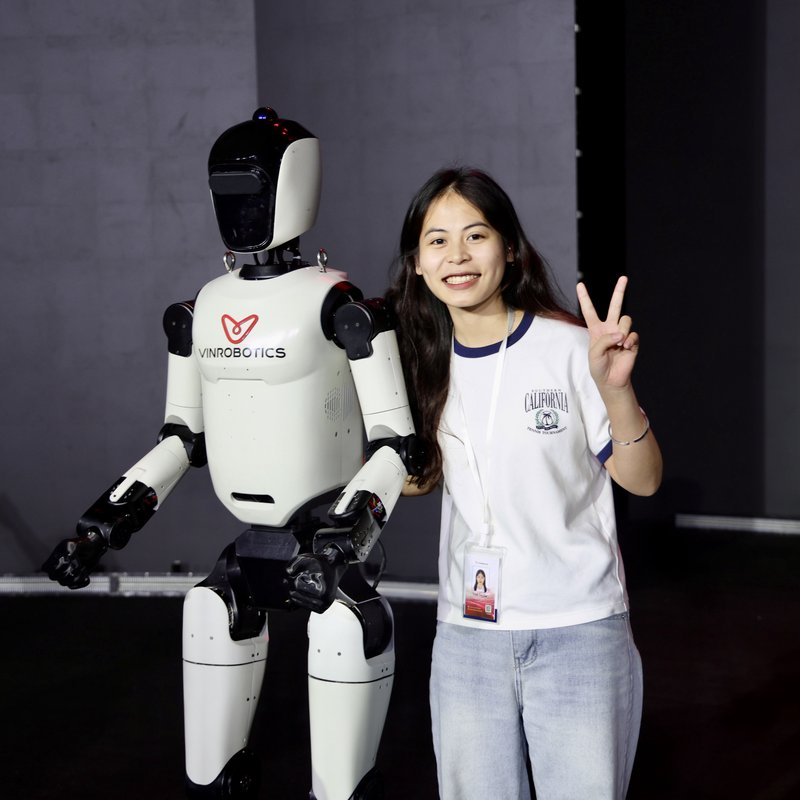

I'm a Reinforcement Learning Research Engineer at Vinrobotics, advised by Dr. An Thai Le. I work on humanoid control for our in-house full-size humanoid - getting it to walk stably under heavy and variable payloads. My focus is whole-body control and motion tracking, so the robot can execute dynamic, agile motions while keeping its balance.
I earned my Robotics Engineer degree from the University of Engineering and Technology (UET), supervised by Dr. Tran Quoc Long - graduating with high distinction and ranked 1st in my class, one semester early.
My research interest lies at the intersection of large-scale pre-training and generalizable whole-body control 🤸 CompliantWBC - human and humanoid painting together with compliant whole-body control. Project page ↗ arXiv ↗ .

* Equal contribution † Equal advising
Vinrobotics' humanoids in action - click a thumbnail to play.